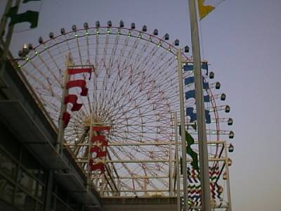
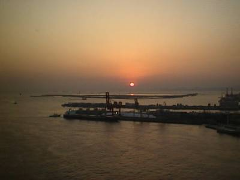
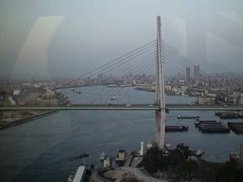
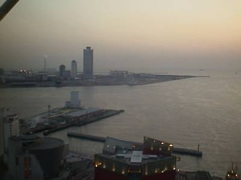
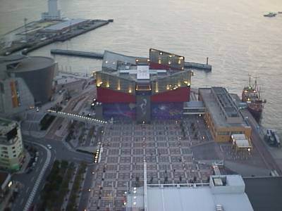

my treasure box
−1999/3/6−
大阪について、今までたまっていたホームページづくりに専念。しかし、僕は旅をしているのかホームページを作りにきているのか・・・。せっかくなので、天保山にいって世界最大らしい観覧車に乗ってきました。それから、時間も無くなってきたので、最終目標である関門海峡、福岡に高速で向かう・・・。
| ○大阪府大阪市 発 |
| ＝＞ （大阪市内は省略） −＞ 名神高速道路 −＞ 山陽自動車道 ＝＞ |
| ○岡山県岡山市 着 |
〜天保山〜

これが、天保山大観覧車。地上高１１２．５ｍ、回転輪直径１００ｍの文字通り大観覧車です。

ちょうどこのとききれいな夕日を見ることができました。

東に見えた天保山大橋。

大阪湾。

観覧車のすぐそばにある海遊館。
その後は、高速で九州に向かいました。しかし、眠かったため、岡山の吉備サービスエリアでダウン。そのままそこで一夜をあかす。